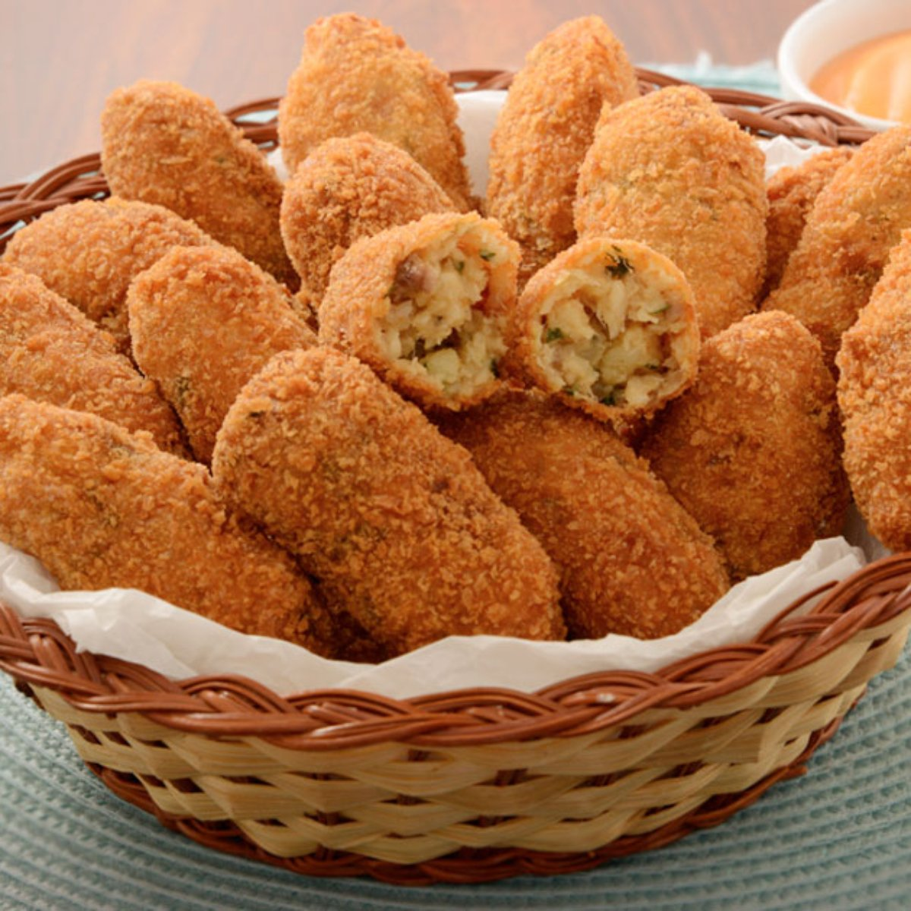

Bolinhos de Tilápia

Irresistíveis e saborosos anéis de cebola recheados com queijo muçarela.
Ingredientes:
- 1 kg de Filé de Tilápia
- 500 g de batata
- 100 g de cebola
- 3 dentes de alho
- Salsinha picada a gosto
- Pimenta caiena moída a gosto
- Noz-moscada a gosto
- 1 ovo
- 50 ml de azeite de oliva
- Sal e pimenta-do-reino a gosto
Modo de Fazer:
- Cozinhe a batata com casca, descasque e esprema ainda quente, deixe esfriar.
- Corte os filés de tilápia em cubinhos. Reserve.
- Corte a cebola e o alho em cubos bem pequenos.
- Em uma panela aqueça o azeite e doure a cebola e o alho, coloque os cubos de tilápia mexa para incorporar ao tempero. Refogue bem até ficar bem sequinho. Deligue o fogo e deixe esfriar.
- Em uma tigela, misture o refogado da tilápia, a batata espremida, as especiarias e a salsinha, misture bem.
- Junte o ovo batido aos poucos até dar ponto para formar os bolinhos, corrija o sal.
- Modele os bolinhos e frite-os em óleo quente.
- Sirva acompanhado com gomos limão.